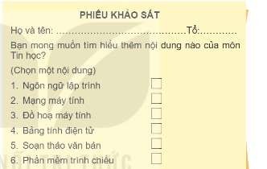
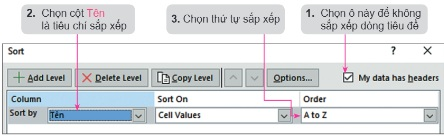
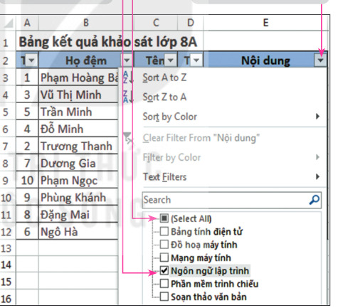

Dành cho giáo viên
Theo dõi lớp
| Học sinh / Nhóm | Đã nộp | Cập nhật |
|---|
Bước 1
1 Khởi động
Hoạt động 1 Phiếu khảo sát
Chung niềm yêu thích môn Tin học, nhóm các bạn học sinh lớp 8A đã cùng nhau thực hiện dự án Thành lập CLB Tin học. Trước tiên, các bạn thực hiện khảo sát về những nội dung Tin học mà học sinh trong lớp muốn tìm hiểu thêm (Hình 6.1). Từ dữ liệu khảo sát thu được, sẽ tiến hành xử lí dữ liệu (sắp xếp danh sách, lọc ra các bạn học sinh cùng muốn tìm hiểu mỗi nội dung tin học,…) để thu được các thông tin cần thiết làm căn cứ tổ chức các hoạt động của CLB.

Ghi bài Khởi động
Sau khi thầy cô chốt, em chép nội dung dưới đây vào vở.
Bước 2 · Hình thành kiến thức mới
2.1 Sử dụng phần mềm bảng tính trợ giúp giải quyết bài toán thực tế
Đọc hiểu Bảng kết quả khảo sát lớp 8A
Đọc mục 1 (SGK trang 27–28). Mỗi phiếu khảo sát được trả lời là một hàng dữ liệu trong bảng tính; họ tên học sinh được tách thành hai phần Họ đệm và Tên. Mục đích của việc khảo sát là thu thập thông tin để quyết định CLB Tin học sẽ được tổ chức như thế nào, ví dụ: (1) Họ và tên học sinh cần được sắp xếp theo thứ tự bảng chữ cái để dễ tìm kiếm; (2) Ở mỗi nội dung Tin học, danh sách học sinh muốn tìm hiểu là những ai? (3) Nội dung nào có nhiều học sinh lựa chọn nhất? (4) Với mỗi nội dung, học sinh thuộc những tổ nào để có căn cứ chia nhóm học tập? Dùng bảng mô phỏng dưới đây để thử sắp xếp và lọc.
Bảng mô phỏng: Bảng kết quả khảo sát lớp 8A
| TT | Họ đệm | Tên | Tổ | Nội dung |
|---|
Câu hỏi SGK trang 28
Ghi bài 1. Bài toán thực tế
Sau khi thầy cô chốt, em chép nội dung dưới đây vào vở.
Bước 2 · Thực hành
2.2 Thực hành: Sắp xếp dữ liệu
Thực hành a) Sắp xếp dữ liệu theo một tiêu chí
Nhiệm vụ: sắp xếp cột Tên của Bảng kết quả khảo sát lớp 8A theo thứ tự bảng chữ cái.
Bước 1. Chọn vùng dữ liệu cần sắp xếp là A2:E12. Trong vùng dữ liệu này, hàng 2 là hàng tiêu đề của bảng, các hàng còn lại là dữ liệu cần sắp xếp.
Bước 2. Trong thẻ Data, tại nhóm Sort & Filter, chọn lệnh Sort để mở hộp thoại Sort. Thực hiện như Hình 6.3. Chọn OK.
Bước 1. Chọn vùng dữ liệu cần sắp xếp là A2:E12. Trong vùng dữ liệu này, hàng 2 là hàng tiêu đề của bảng, các hàng còn lại là dữ liệu cần sắp xếp.
Bước 2. Trong thẻ Data, tại nhóm Sort & Filter, chọn lệnh Sort để mở hộp thoại Sort. Thực hiện như Hình 6.3. Chọn OK.

Thực hành b) Sắp xếp dữ liệu theo nhiều tiêu chí
Có hai học sinh cùng tên là Trang, nhưng bạn Ngô Hà Trang được sắp xếp trước bạn Đặng Mai Trang, trong khi chữ N đứng sau chữ Đ trong bảng chữ cái. Để danh sách hiển thị đúng, em cần bổ sung thêm tiêu chí thứ hai là sắp xếp Họ đệm: mở hộp thoại Sort, chọn Add Level để thêm tiêu chí, ở dòng Then by chọn cột Họ đệm (Hình 6.5). Lưu ý: chọn Delete Level nếu muốn xoá bỏ tiêu chí sắp xếp. Em có thể thử trên bảng mô phỏng ở mục 1.
Ghi bài 2. Sắp xếp dữ liệu
Sau khi thầy cô chốt, em chép nội dung dưới đây vào vở.
Bước 2 · Thực hành
2.3 Thực hành: Lọc dữ liệu
Thực hành Nhiệm vụ 1, 2: Lọc dữ liệu
Chức năng lọc dữ liệu của phần mềm bảng tính được sử dụng để chọn và chỉ hiển thị các dòng thoả mãn các điều kiện nào đó.
Nhiệm vụ 1 (lọc theo một tiêu chí): lọc danh sách học sinh theo từng nội dung Tin học mà học sinh lựa chọn.
Bước 1. Chọn vùng dữ liệu cần lọc là A2:E12. Bước 2. Trong thẻ Data, tại nhóm Sort & Filter, chọn lệnh Filter; nút lọc xuất hiện ở tất cả các ô thuộc dòng tiêu đề. Bước 3. Thực hiện lọc theo Hình 6.7, chọn OK. Bước 4. Để bỏ lọc, chọn Select All.
Nhiệm vụ 2 (lọc theo nhiều tiêu chí): lọc danh sách học sinh của Tổ 1 muốn tìm hiểu nội dung Đồ hoạ máy tính: trong cột Nội dung chọn Đồ hoạ máy tính, trong cột Tổ chọn 1.
Nhiệm vụ 1 (lọc theo một tiêu chí): lọc danh sách học sinh theo từng nội dung Tin học mà học sinh lựa chọn.
Bước 1. Chọn vùng dữ liệu cần lọc là A2:E12. Bước 2. Trong thẻ Data, tại nhóm Sort & Filter, chọn lệnh Filter; nút lọc xuất hiện ở tất cả các ô thuộc dòng tiêu đề. Bước 3. Thực hiện lọc theo Hình 6.7, chọn OK. Bước 4. Để bỏ lọc, chọn Select All.
Nhiệm vụ 2 (lọc theo nhiều tiêu chí): lọc danh sách học sinh của Tổ 1 muốn tìm hiểu nội dung Đồ hoạ máy tính: trong cột Nội dung chọn Đồ hoạ máy tính, trong cột Tổ chọn 1.

Ghi bài 3. Lọc dữ liệu
Sau khi thầy cô chốt, em chép nội dung dưới đây vào vở.
Bước 3
3 Luyện tập
Luyện tập Thời gian sử dụng thiết bị số
Để phục vụ cho việc thành lập CLB Tin học của trường, các bạn đã thực hiện khảo sát trong khối 8 về số giờ mỗi ngày sử dụng thiết bị số ngoài giờ học ở trường (Hình 6.9). Em hãy: a) Tạo bảng dữ liệu, lưu tệp với tên TGSDThietbiso.xlsx; b) Sắp xếp theo thứ tự giá trị giảm dần của cột Không sử dụng; c) Sắp xếp theo hai tiêu chí: giảm dần của cột Không sử dụng, nếu bằng nhau thì giảm dần của cột Dưới 1 giờ; d) Lọc danh sách các lớp không có học sinh sử dụng thiết bị số từ 5 giờ trở lên.
| TT | Lớp | Không sử dụng | Dưới 1 giờ | 1–2 giờ | 3–4 giờ | Từ 5 giờ trở lên |
|---|---|---|---|---|---|---|
| 1 | 8A1 | 8 | 12 | 15 | 7 | 1 |
| 2 | 8A2 | 7 | 10 | 17 | 6 | |
| 3 | 8A3 | 6 | 13 | 15 | 8 | 2 |
| 4 | 8A4 | 8 | 11 | 10 | 9 | 3 |
| 5 | 8A5 | 8 | 10 | 12 | 11 | |
| 6 | 8A6 | 7 | 12 | 14 | 8 | |
| 7 | 8A7 | 5 | 20 | 15 | 9 | |
| 8 | 8A8 | 9 | 16 | 17 | 7 | |
| 9 | 8A9 | 6 | 12 | 15 | 4 | 2 |
| 10 | 8A10 | 4 | 15 | 16 | 3 | 4 |
Ghi bài Luyện tập
Sau khi thầy cô chốt, em chép nội dung dưới đây vào vở.
Bước 4
4 Vận dụng
Vận dụng Lọc theo điều kiện số
Ngoài các chức năng lọc mà em đã tìm hiểu, phần mềm bảng tính còn có chức năng lọc theo điều kiện. Khi nháy chuột vào nút lệnh lọc dữ liệu, em còn thấy tuỳ chọn Number Filters (hoặc Text Filters) nếu phần lớn các ô trong cột đó chứa dữ liệu số (hoặc kí tự). Em hãy mở tệp TGSDThietbiso.xlsx, tìm hiểu chức năng Number Filters để lọc danh sách các lớp có số học sinh sử dụng thiết bị số từ 3 đến 4 giờ lớn hơn hoặc bằng 10 học sinh.
Ghi bài Vận dụng
Sau khi thầy cô chốt, em chép nội dung dưới đây vào vở.